截图统一为 1440×900 视口（移动端 390×900），DPR 1.5 / 2.0，关闭入场动画后截取。
「改造前」为提交 1a07ce4，「改造后」为提交 be87773。
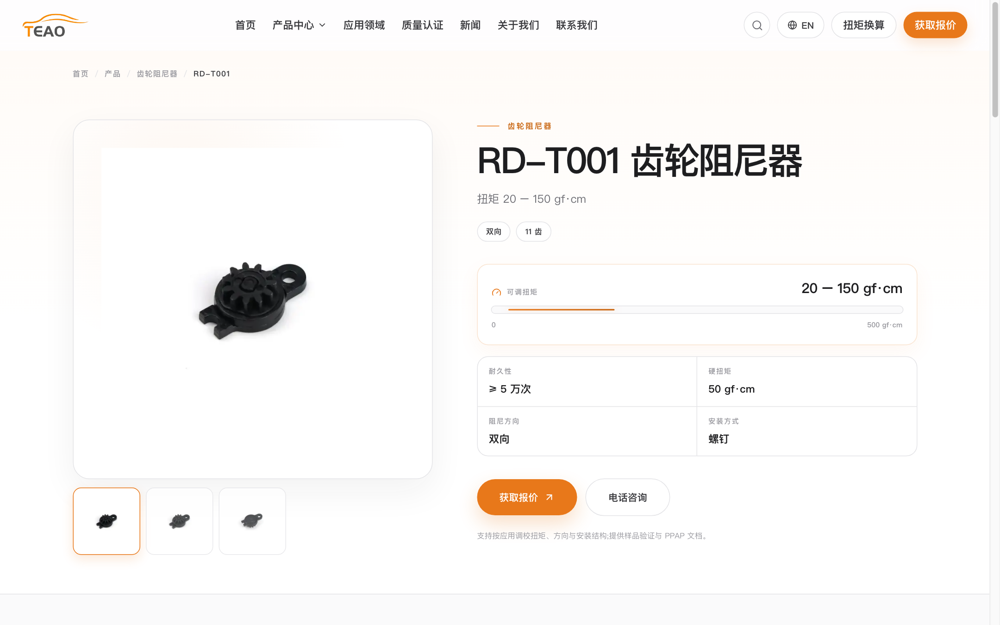
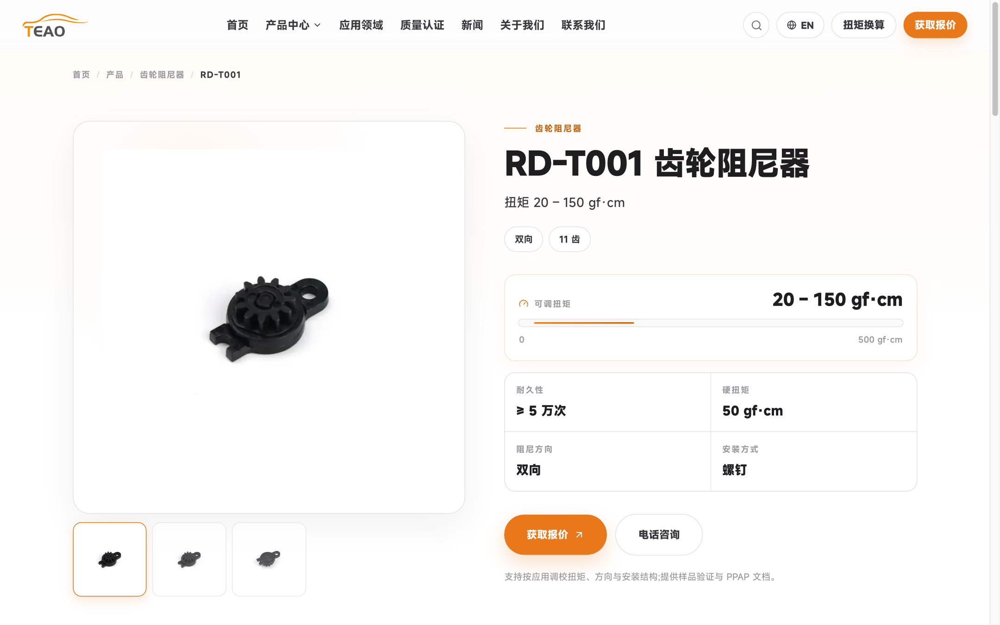
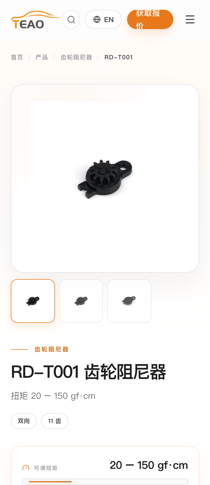
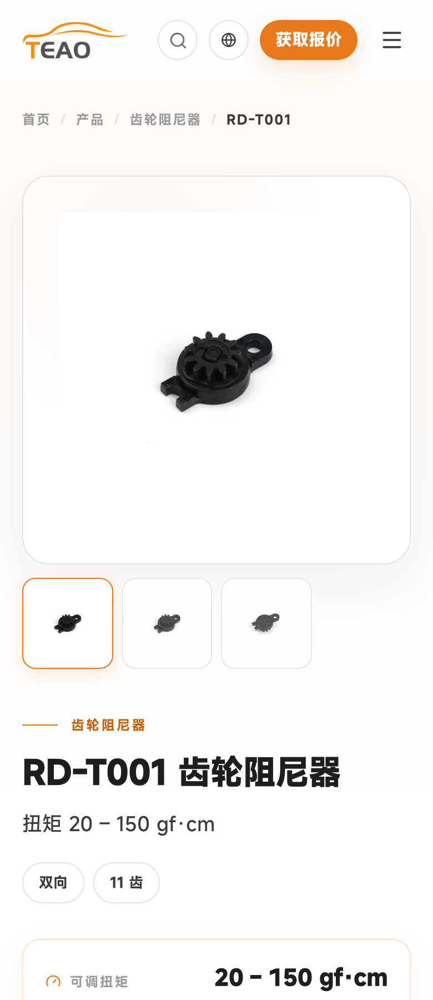
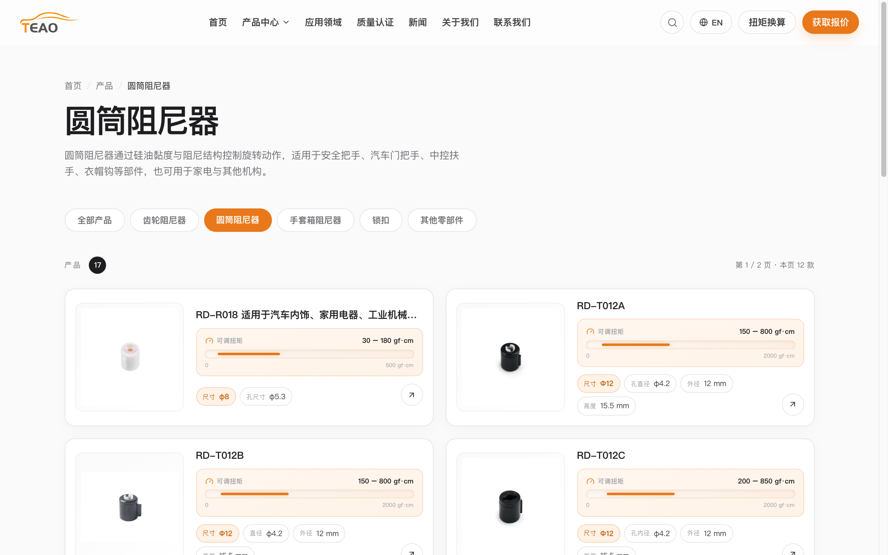
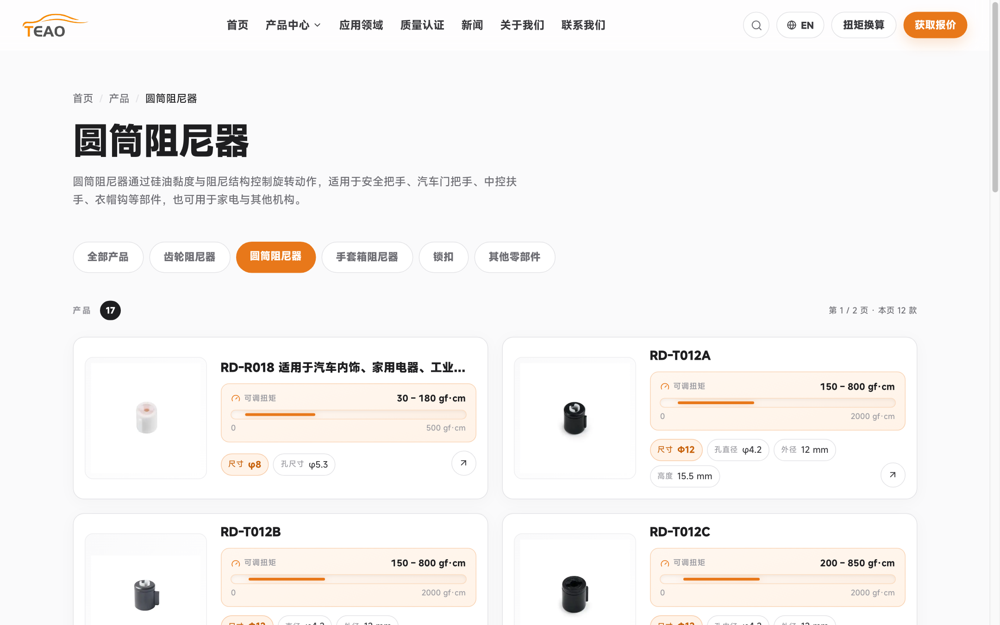
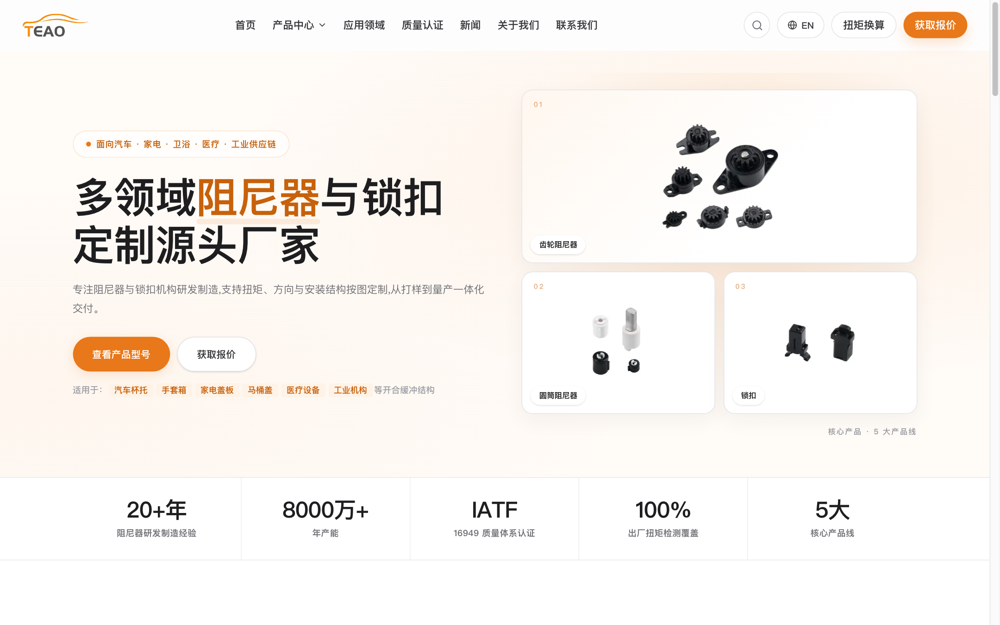
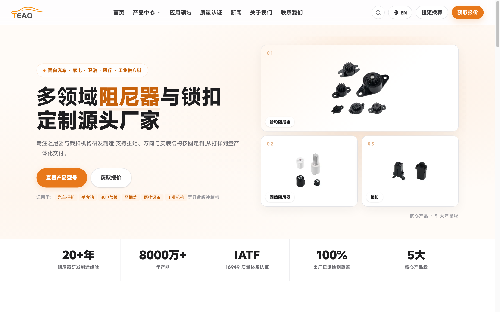
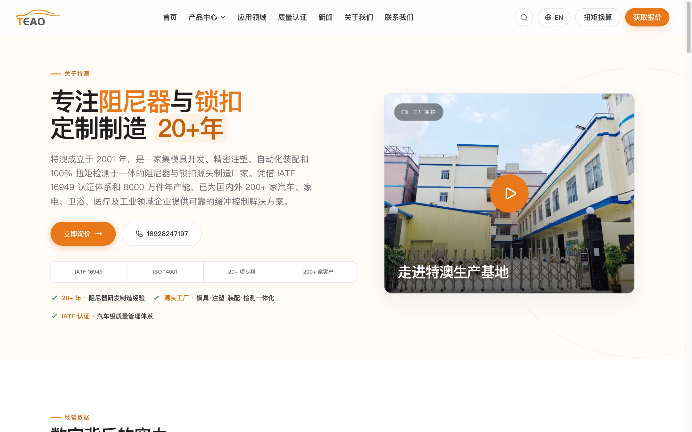
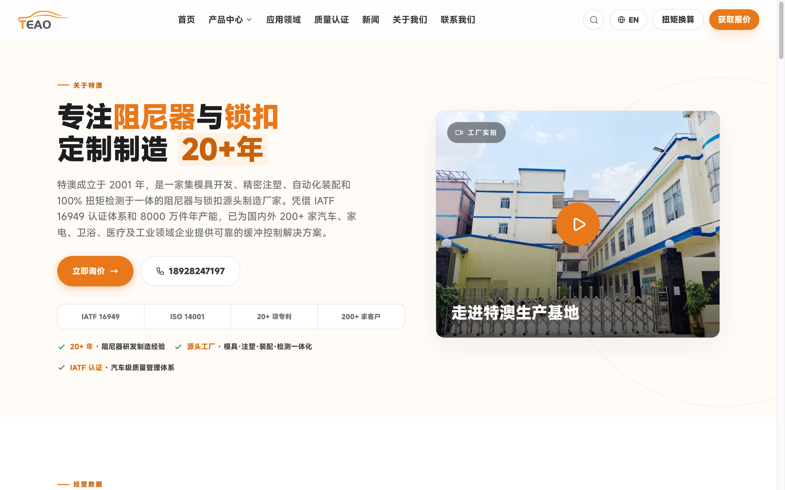
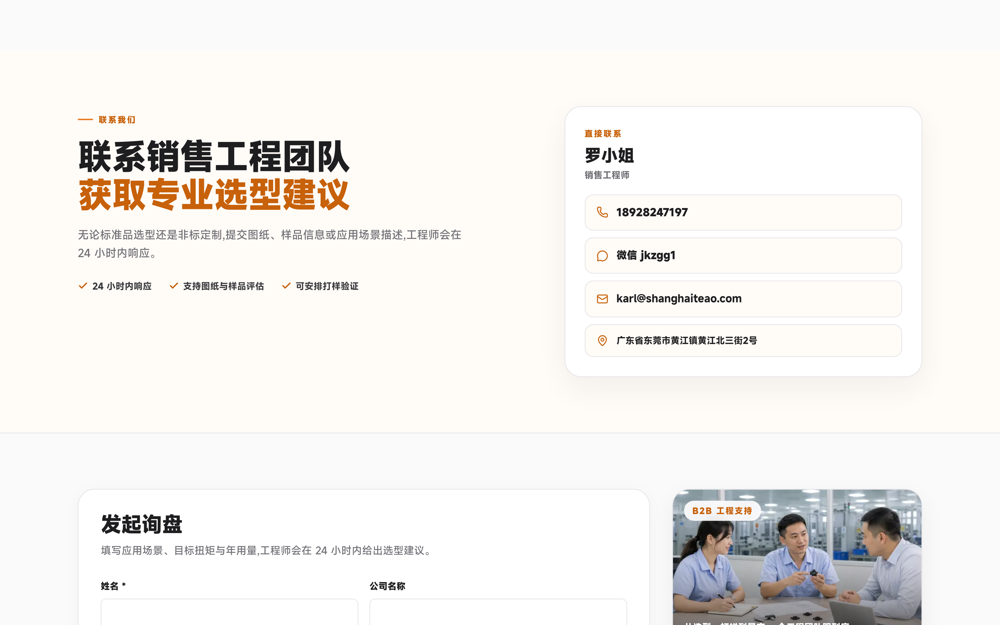
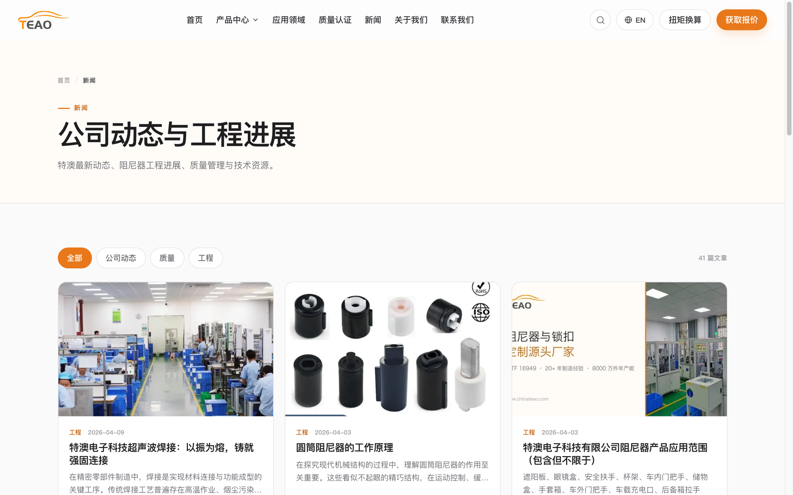
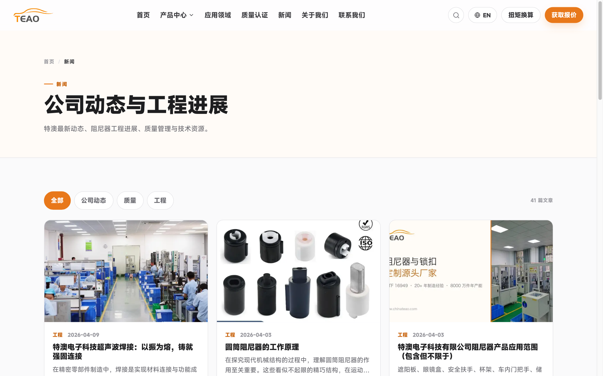
| 元素 | 改造前 | 改造后 |
|---|---|---|
| 正文 | 15px / 行高 1.7 | 16px / 行高 1.75 |
| 详情页主标题 | 32–52px / 900 / 行高 0.98 / 字距 -0.045em | 30–46px / 700 / 行高 1.08 / 字距 -0.02em |
| 详情页副标题 | 16px / 灰 | 18px / 深灰 |
| 详情页参数标签 | 10px / 700 | 12px / 600 |
| 详情页参数数值 | 15px / 900 | 18px / 700 |
| 详情页规格 chip | 11px / 700 | 13px / 600 |
| 详情页扭矩数值 | 20px / 900 | 24px / 700（移动端 20px） |
| 列表卡片型号 | 15–16px / 900 | 16–17px / 700 |
| 列表卡片 chip | 9–12px | 11–12.5px |
| 全站最小字号 | 9px（共 8 处） | 12px |
| 字号写法 | 任意 px 218 处 > 命名阶梯 199 处 | 5 档 token：12 / 13 / 15 / 16 / 18 |